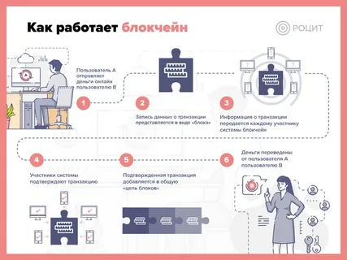
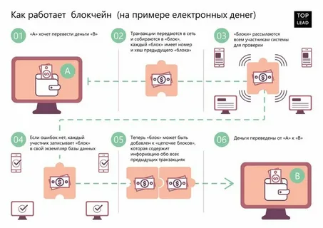

Блокчейн — технология, которая позволяет сохранять и передавать данные в виде последовательности связанных блоков. Каждый блок содержит информацию и ссылку на предыдущий — вместе они образуют цепочку. Так данные в блокчейне защищены от изменений и фальсификации.

